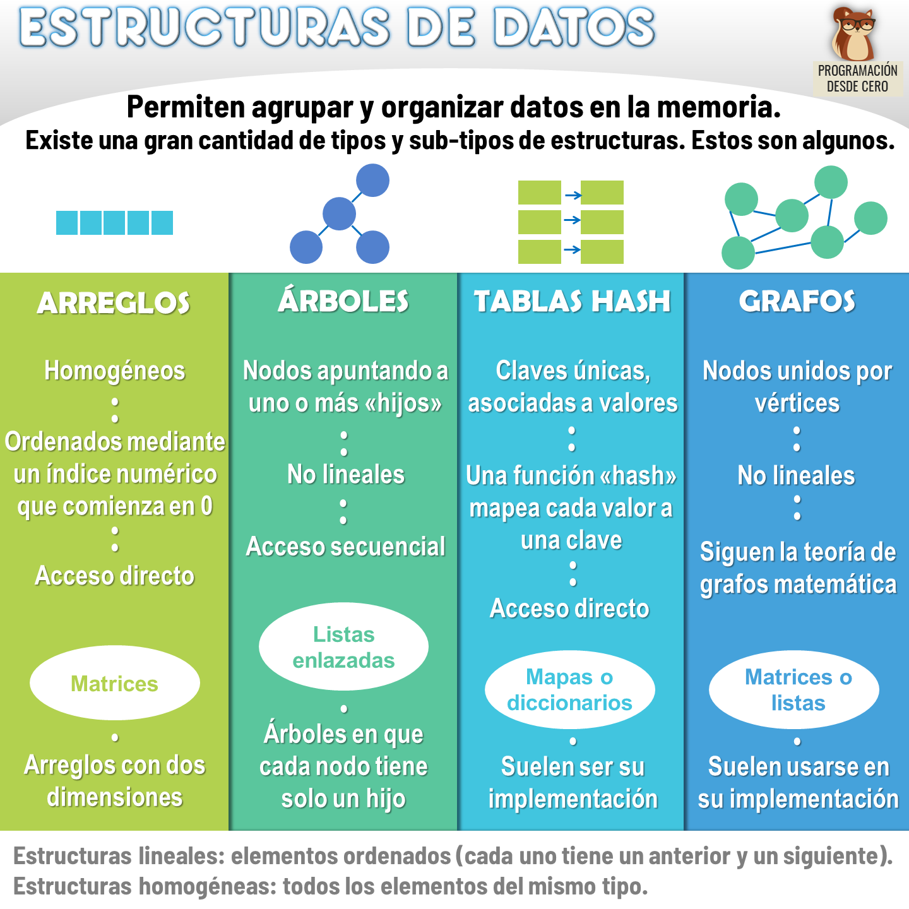
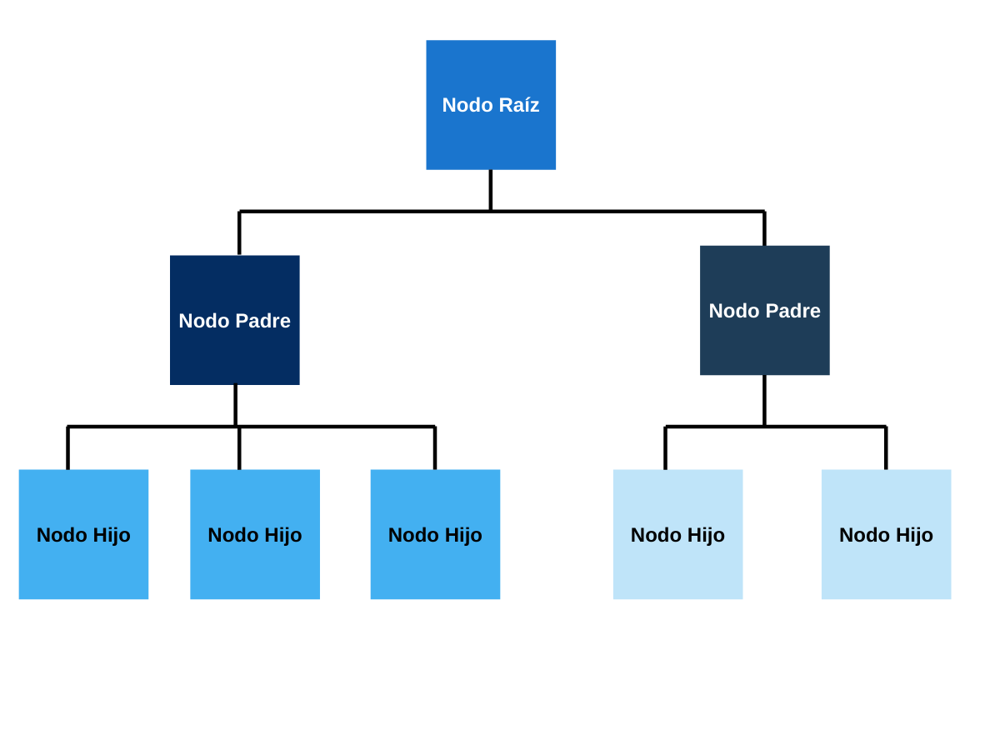
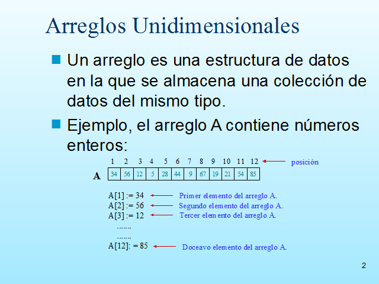
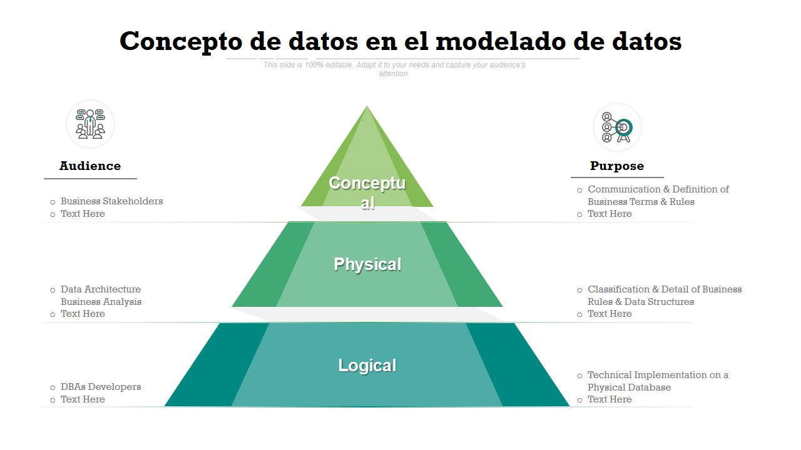

1- ¿Qué es una estructura?
Es una forma de organizar, almacenar y administrar datos en una computadora que pueda ser utilizado de manera eficiente que realiza operaciones como acceso, eliminación y búsqueda de datos.
Una estructura de datos es un arreglo de datos en la memoria de una computadora y en algunas ocasiones en un disco. Las estructuras de datos incluyen arreglos (array), listas enlazadas pilas (stack), árboles binarios, colas (queue) y tablas de dispersión entre otros. Los arreglos pueden ser pensados como tipos de datos abstractos o abstractos data type, un ADT es una forma de ver una estructura de datos enfocándose en lo que esta hace e ignorando cómo hace su trabajo es decir el a ADT de deberá cumplir ciertas propiedades, pero la manera como estará implementado puede variar.
.........................
Es una forma de organizar, almacenar y administrar datos en una computadora que pueda ser utilizado de manera eficiente que realiza operaciones como acceso, eliminación y búsqueda de datos.
La presentación de los datos debe ser fácil de entender para qué tanto desarrollador como el usuario pueda realizar una implementación eficiente de las operaciones.
• La modificación de las estructuras de datos es sencilla • Requiere menos tiempo • Ahorra espacio del almacenamiento en memoria • La representación de datos es fácil




Clasificación de las estructuras de datos Estructuras de datos lineales Los elementos se organizan en una sola dimensión, también conocido como dimensión lineal, los datos se organizan de manera secuencial Estructuras de datos no lineales Los elementos se organizan en uno o muchos, muchos a uno y muchos a muchos, los datos no siguen una secuencia única Array (arreglo) Un arreglo (array) es una colección de elementos de datos almacenados en ubicaciones contiguas de memoria, la idea es almacenar múltiples elementos del mismo tipo. Esto facilita el cálculo de la posición de cada elemento simplemente agregando un desplazamiento (offset) a una un valor base es decir a la ubicación de memoria del primer elemento del arreglo.